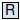

Table of Contents
- User's Guide
- Blocks
- Conditions
- Assemblies
- Regions
- Subregions
- Phases
- Species
- Chemistry
- Connectors
- Characteristics
- Units
- Quantities
- Utilities
- Icons
Download
- Latest: v0.1.2
FCSys.Quantities
Variables to represent physical propertiesInformation
In FCSys, the
unit attribute of each Real variable actually denotes the
dimension.1 The fundamental dimensions are
angle (A), length (L), mass (M), particle number (N), and time (T). These
are combined according to the rules established for unit strings
[Modelica2010, p. 210].
Temperature and charge are derived dimensions
(see the Units package).
The quantity attribute is not used since the type is the quantity.
The displayUnit attribute is
only used for quantities that imply a certain display unit.
Methods for unit checking have been established [Mattsson2008, Broman2008, Aronsson2009] and can, in theory, be applied to dimension checking instead.
The Quantities package is abbreviated as Q throughout
the rest of FCSys.
1. This misnomer is necessary because Real variables do not have a dimension
attribute.
Package Content
| Name | Description |
|---|---|
| Examples | |
|  Acceleration | |
| Amount | |
| AmountReciprocal | Reciprocal of amount |
| Angle | |
| Angle2 | Solid angle |
| Area | |
| AreaSpecific | Specific area |
| Capacitance | |
| Density | |
| DensityRate | Rate of density |
| ConductanceElectrical | Electrical conductance |
| ConductivityElectrical | Electrical conductivity |
| Continuity | |
| Current | |
| CurrentAreic | Areic current |
| CurrentAreicAbsolute | Absolute areic current |
| CurrentRate | Rate of current |
| Diffusivity | |
| Energy | |
| Fluidity | |
| Force | |
| ForceSpecific | Specific force |
| Frequency | |
| Inductance | |
| Length | |
| LengthReciprocal | Reciprocal of length |
| LengthSpecific | Specific length |
| MagneticFlux | Magnetic flux |
| MagneticFluxAreic | Areic magnetic flux |
| MagneticFluxReciprocal | Reciprocal of magnetic flux |
| Mass | |
| MassSpecific | Specific mass |
| MassVolumic | Volumic mass |
| Mobility | |
| MomentumRotational | Rotational momentum |
| Number | |
| NumberAbsolute | Absolute number |
| Permeability | |
| Permittivity | |
| PermittivityReciprocal | Reciprocal of permittivity |
| Potential | |
| PotentialAbsolute | Absolute potential |
| PotentialPerWavenumber | Potential per wavenumber |
| PotentialRate | Rate of potential |
| Power | |
| PowerArea | Power times area |
| PowerAreic | Areic power |
| PowerAreicPerPotential4 | Areic power per 4th power of potential |
| PowerRadiant | Radiant power |
| Pressure | |
| PressureAbsolute | Absolute pressure |
| PressureRate | Rate of pressure |
| PressureReciprocal | Reciprocal of pressure |
| ResistanceElectrical | Electrical resistance |
| ResistanceThermal | Thermal resistance |
| SurfaceTension | Surface tension |
| Resistivity | |
| Time | |
| TimeAbsolute | Absolute time |
| TimeLineic | Lineic time |
| Velocity | |
| Velocity2 | Squared velocity |
| VelocityAmount | |
| Volume | |
| VolumeRate | Rate of volume |
| VolumeSpecific | Specific volume |
| VolumeSpecificAbsolute | Absolute specific volume |
| VolumeSpecificRate | Rate of specific volume |
| Wavenumber | |
| CapacityThermal | Thermal capacity |
| CapacityThermalSpecific | Specific thermal capacity |
| CapacityThermalVolumic | Volumic thermal capacity |
| PotentialChemical | Chemical potential |
| Temperature | |
| TemperatureAbsolute | Absolute temperature |
| TemperatureRate | Rate of temperature |
| ResistivityThermal | Thermal resistivity |
| Conductance | Conductance |
Types and constants
type Acceleration = TypeReal (final unit="L/T2");
type Amount = TypeReal (final unit="N", min=0);
type AmountReciprocal = TypeReal (final unit="1/N", min=0) "Reciprocal of amount";
type Angle = TypeReal (final unit="A");
type Angle2 = TypeReal (final unit="A2") "Solid angle";
type Area = TypeReal (final unit="L2", min=0);
type AreaSpecific = TypeReal (final unit="L2/N", min=0) "Specific area";
type Capacitance = TypeReal (final unit="N2.T2/(L2.M)", min=0);
type Density = TypeReal (final unit="N/L3", min=0);
type DensityRate = TypeReal (final unit="N/(L3.T)") "Rate of density";
type ConductanceElectrical = TypeReal (final unit="N2.T/(L2.M)", min=0) "Electrical conductance";
type ConductivityElectrical = TypeReal (final unit="N2.T/(L3.M)", min=0) "Electrical conductivity";
type Continuity = TypeReal (final unit="L.M/(N.T)", min=0);
type Current = TypeReal (final unit="N/T");
type CurrentAreic = TypeReal (final unit="N/(L2.T)") "Areic current";
type CurrentAreicAbsolute = TypeReal (final unit="N/(L2.T)", min=0) "Absolute areic current";
type CurrentRate = TypeReal (final unit="N/T2") "Rate of current";
type Diffusivity = TypeReal (final unit="L2/T", min=0);
type Energy = TypeReal (final unit="L2.M/T2");
type Fluidity = TypeReal (final unit="L.T/M", min=0);
type Force = TypeReal (final unit="L.M/T2");
type ForceSpecific = TypeReal (final unit="L.M/(N.T2)") "Specific force";
type Frequency = TypeReal (final unit="A/T");
type Inductance = TypeReal (final unit="L2.M/N2", min=0);
type Length = TypeReal (final unit="L", min=0);
type LengthReciprocal = TypeReal (final unit="1/L", min=0) "Reciprocal of length";
type LengthSpecific = TypeReal (final unit="L/N", min=0) "Specific length";
type MagneticFlux = TypeReal (final unit="L2.M/(A.N.T)") "Magnetic flux";
type MagneticFluxAreic = TypeReal (final unit="M/(A.N.T)") "Areic magnetic flux";
type MagneticFluxReciprocal = TypeReal (final unit="A.N.T/(L2.M)") "Reciprocal of magnetic flux";
type Mass = TypeReal (final unit="M", min=0);
type MassSpecific = TypeReal (final unit="M/N", min=0) "Specific mass";
type MassVolumic = TypeReal (final unit="M/L3", min=0) "Volumic mass";
type Mobility = TypeReal (final unit="N.T/M", min=0);
type MomentumRotational = TypeReal (final unit="L2.M/(A.T)") "Rotational momentum";
type Number = TypeReal (final unit="1");
type NumberAbsolute = TypeReal (final unit="1", min=0) "Absolute number";
type Permeability = TypeReal (final unit="L.M/N2", min=0);
type Permittivity = TypeReal (final unit="N2.T2/(L3.M)", min=0);
type PermittivityReciprocal = TypeReal (final unit="L3.M/(N2.T2)", min=0) "Reciprocal of permittivity";
type Potential = TypeReal (final unit="L2.M/(N.T2)");
type PotentialAbsolute = TypeReal (final unit="L2.M/(N.T2)", min=0) "Absolute potential";
type PotentialPerWavenumber = TypeReal (final unit="L3.M/(A.N.T2)") "Potential per wavenumber";
type PotentialRate = TypeReal (final unit="L2.M/(N.T3)") "Rate of potential";
type Power = TypeReal (final unit="L2.M/T3");
type PowerArea = TypeReal (final unit="L4.M/T3") "Power times area";
type PowerAreic = TypeReal (final unit="M/T3") "Areic power";
type PowerAreicPerPotential4 = TypeReal (final unit="M.T5/L8") "Areic power per 4th power of potential";
type PowerRadiant = TypeReal (final unit="L2.M/(A2.T3)") "Radiant power";
type Pressure = TypeReal (final unit="M/(L.T2)");
type PressureAbsolute = TypeReal (final unit="M/(L.T2)", min=0) "Absolute pressure";
type PressureRate = TypeReal (final unit="M/(L.T3)") "Rate of pressure";
type PressureReciprocal = TypeReal (final unit="L.T2/M", min=0) "Reciprocal of pressure";
type ResistanceElectrical = TypeReal (final unit="L2.M/(N2.T)", min=0) "Electrical resistance";
type ResistanceThermal = TypeReal (final unit="T/N", min=0) "Thermal resistance";
type SurfaceTension = TypeReal (final unit="M/T2") "Surface tension";
type Resistivity = TypeReal (final unit="L.T/N", min=0);
type Time = TypeReal (final unit="T");
type TimeAbsolute = TypeReal (final unit="T", min=0) "Absolute time";
type TimeLineic = TypeReal (final unit="T/L") "Lineic time";
type Velocity = TypeReal (final unit="L/T");
type Velocity2 = TypeReal (final unit="L2/T2") "Squared velocity";
type VelocityAmount = TypeReal (final unit="L.N/T");
type Volume = TypeReal (final unit="L3", min=0);
type VolumeRate = TypeReal (final unit="L3/T") "Rate of volume";
type VolumeSpecific = TypeReal (final unit="L3/N") "Specific volume";
type VolumeSpecificAbsolute = TypeReal (final unit="L3/N", min=0) "Absolute specific volume";
type VolumeSpecificRate = TypeReal (final unit="L3/(N.T)") "Rate of specific volume";
type Wavenumber = TypeReal (final unit="A/L");
type CapacityThermal = Amount (displayUnit="J/K") "Thermal capacity";
type CapacityThermalSpecific = NumberAbsolute (displayUnit="J/(mol.K)") "Specific thermal capacity";
type CapacityThermalVolumic = Density (displayUnit="J/(m3.K)") "Volumic thermal capacity";
type PotentialChemical = Potential (displayUnit="J/mol") "Chemical potential";
type Temperature = Potential (displayUnit="K");
type TemperatureAbsolute = PotentialAbsolute (displayUnit="degC") "Absolute temperature";
type TemperatureRate = PotentialRate (displayUnit="K/s") "Rate of temperature";
type ResistivityThermal = Resistivity (displayUnit="m.K/W") "Thermal resistivity";
type Conductance = Current (displayUnit="W/K") "Conductance";